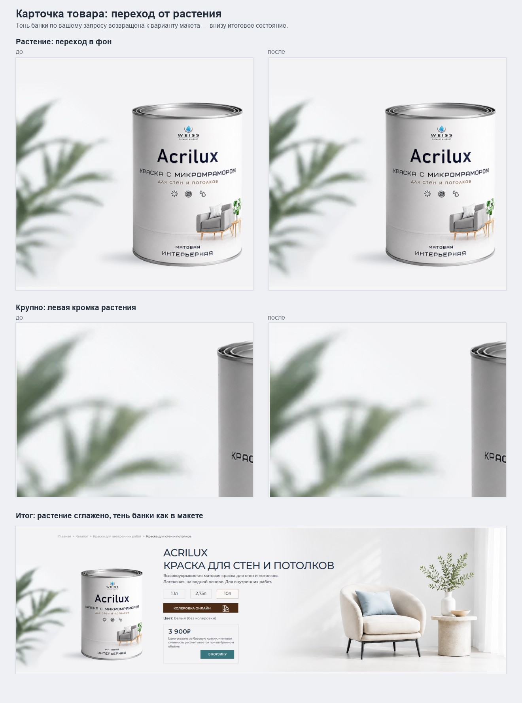
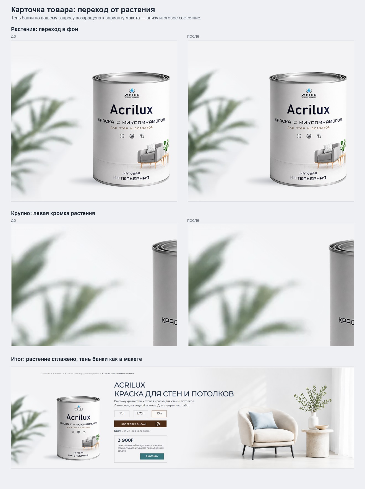

Карточка товара: переход от растения
Слева — до, справа — после. Тень банки по вашему запросу возвращена к варианту макета: в сравнении осталось только сглаживание перехода от растения, тень на итоговом снимке — прежняя. Снимки статической вёрстки при ширине окна 1920 и 2560.

